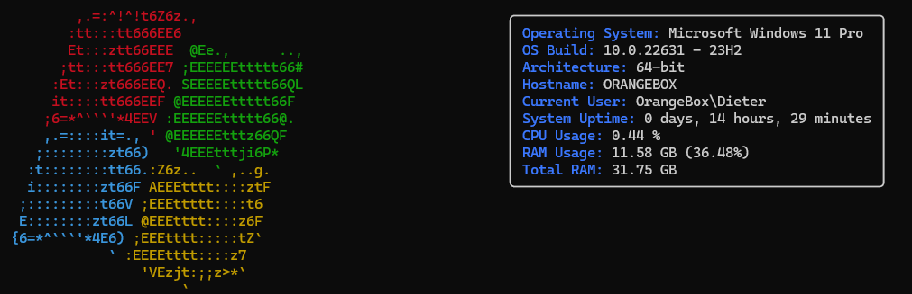
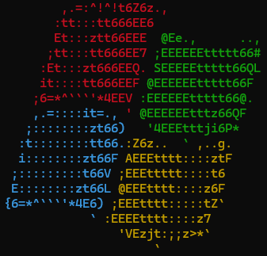
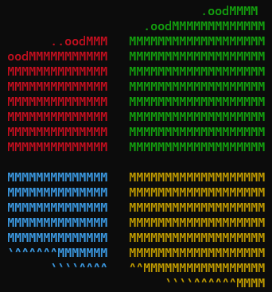
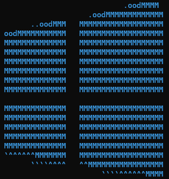
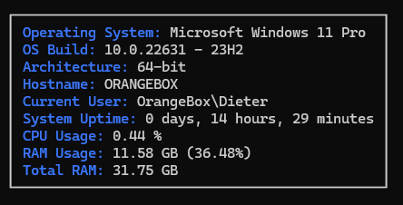
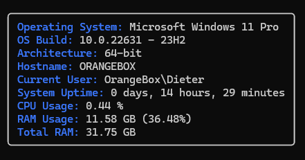
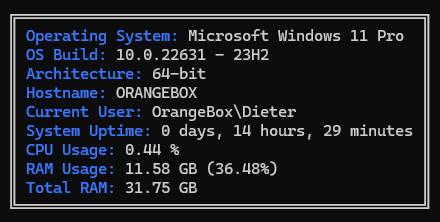
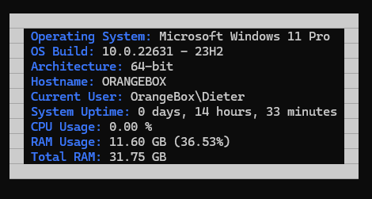
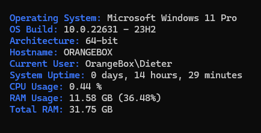

PoSHFetch
PoSHFetch
Link: Github
PoSHFetch is a command-line system information tool written in PowerShell 5.1. PoSHFetch displays information about your operating system, software and hardware in an aesthetic and visually pleasing way. PoSHFetch is easily customizable and has build in options.
The Default layout looks like this: 
Features
- Displays key system information such as OS version, CPU and RAM usage.
- Customizable output with various border styles like rounded, double-lined, and bold.
- Colored and non-colored output options.
Prerequisites
Before you run this script, ensure you have the following:
- Windows PowerShell 5.1 or higher.
Setup
- Clone this repository or download the source code.
- Import the module into your PowerShell session:
Import-Module .\path\to\PoshFetch.psm1
Replace .\path\to\PoshFetch.psm1 with the actual path to the PoshFetch.psm1 file. Add the import to your PowerShell Profile if you want to make this available across your sessions.
Run it
Run it with
Get-Info
Customization
Build in
Change the Param Block of the function to change the default behaviour:
function New-Info {
param (
[Parameter(Mandatory = $true)]
[object]$Logo = $WaveLogoColored,
[Parameter(Mandatory = $true)]
[object]$Info = $Info,
[Parameter(Mandatory = $true)]
[object]$Box = $RoundedBox
)
#Rest of the code is here
}
Logo options
This script comes with different logo options which can be configured:
WaveLogoColoredModernLogoColoredModernLogoBlue
Colored Wave logo:

New-Info -Logo $WaveLogoColored -Info $Info -Box $RoundedBox
Colored Modern logo:

New-Info -Logo $ModernLogoColored -Info $Info -Box $RoundedBox
Modern Blue logo:

New-Info -Logo $ModernLogoBlue -Info $Info -Box $RoundedBox
Box options
The script includes several predefined styles stored in variables:
$Box: Standard box with sharp corners.$RoundedBox: Box with rounded corners.$DoubleBox: Box with double lines.$BoldBox: Box with bold lines.$NoBox: Output without any border.
Standard box:

New-Info -Logo $WaveLogoColored -Info $Info -Box $Box
Box with rounded corners:

New-Info -Logo $WaveLogoColored -Info $Info -Box $RoundedBox
Double Box:

New-Info -Logo $WaveLogoColored -Info $Info -Box $DoubleBox
Bold Box:

New-Info -Logo $WaveLogoColored -Info $Info -Box $BoldBox
No border:

New-Info -Logo $WaveLogoColored -Info $Info -Box $NoBox
Extended customization
You can customize the colors and style by editing the JSON objects associated with each logo and the info text in the script.
The Base JSON object looks like
{
"text": [
["This is an object", "3", "0"], ["This is also an object", "3", "0"], ["`n","7","0"]
]
}
-
text: This is an array that holds other arrays. Each of these inner arrays represents a piece of text along with its display properties.-
["This is an object", "3", "0"]:"This is an object": This is the actual text to be displayed."3": This represents the foreground color code."0": This represents the background color code.
Color values can be either the code or the color name. For reference, see the Microsoft Page
-
["n", “7”, “0”]`:- “
n": This represents a newline character in your text output, used to break lines or start a new line. It is used as an identifier when the line ends on both the logo and info. "7"and"0"are again the foreground and background color codes, respectively (in case of the new-line, they are ignored).
- “
-
Contributing
Contributions to enhance the functionality or documentation of this script are welcome. Please ensure to test your changes before submitting a pull request.
License
This project is licensed under the GNU General Public License v3.0 - see the COPYING file for more details.